Help exists nearby —
but no one knows
In communities dealing with humanitarian crises — flooding, food shortage, injury, displacement — help is often nearby but invisible. People needing assistance don't know who to contact. People willing to help don't know where to go. WhatsApp groups and Facebook posts are the default, but they are chaotic, slow, and expose the person in need to public visibility.
3H was designed to solve this: a structured, private, location-based system that connects people in crisis with verified nearby helpers — without requiring internet connectivity in the moment of need.
How the
idea emerged
The concept came from observing how humanitarian aid actually gets distributed in rural and semi-urban communities. Official channels are slow. WhatsApp groups work but create noise, privacy issues, and no accountability. People fall through the gaps — not because help doesn't exist, but because the request never reaches the right person.
3H models the structure of existing informal networks — neighbours, community groups, local volunteers — but gives them a private, reliable, and accountable digital layer. The goal was to make the system feel familiar, not technological.
Three key
user insights
How the app
is structured
The IA separates two primary journeys — requesting help and offering help — with a shared activity layer showing community status. Both journeys are accessible from the home screen in one tap.
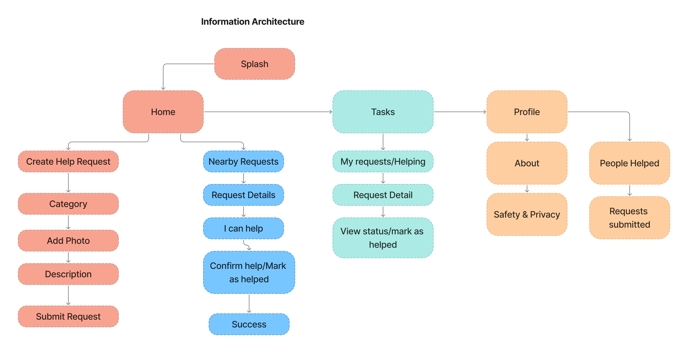
The complete
help request journey
The main flow covers: home → select category → take photo → add description → submit request → confirmation. Six steps, one decision per screen. A parallel flow handles the helper journey: browse list → view detail → claim task → mark complete.

From Wireframe
to Final UI
Three key screens show how layout evolved from structural wireframe decisions to the final high-fidelity interface. Visual language, colour, and emotional tone were layered on top of a solid structural foundation.
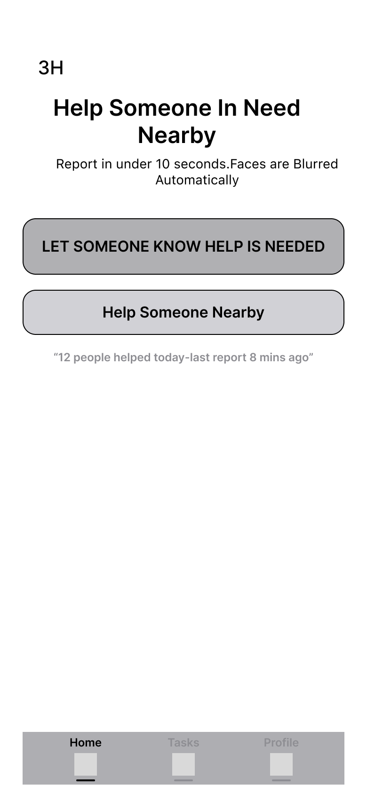
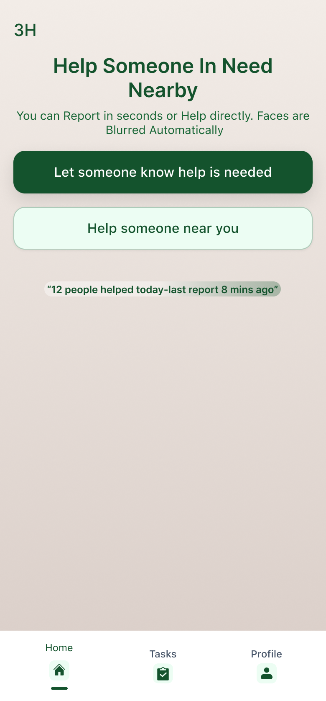
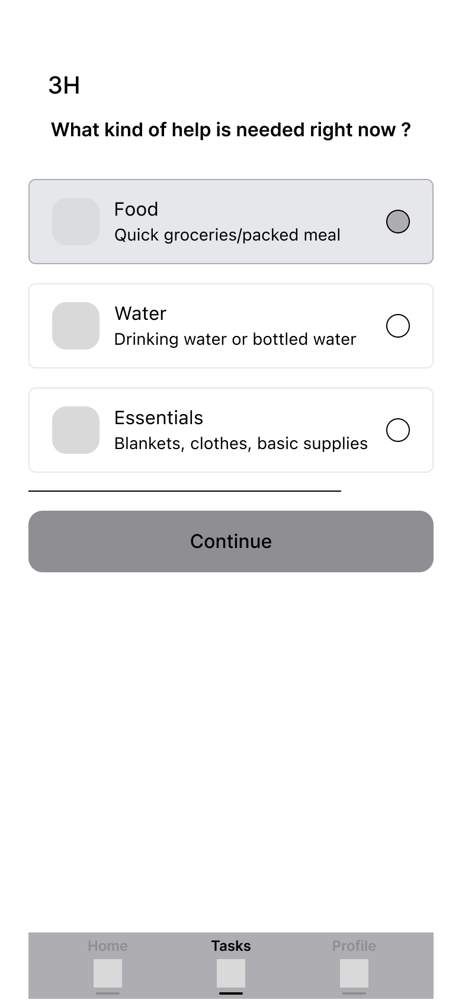
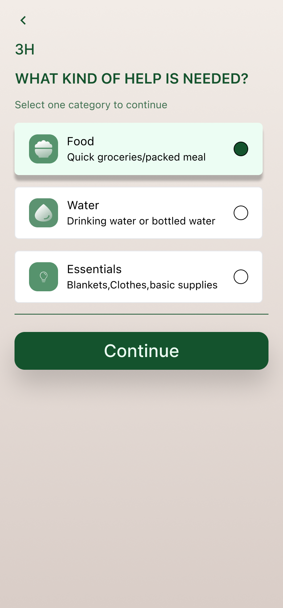
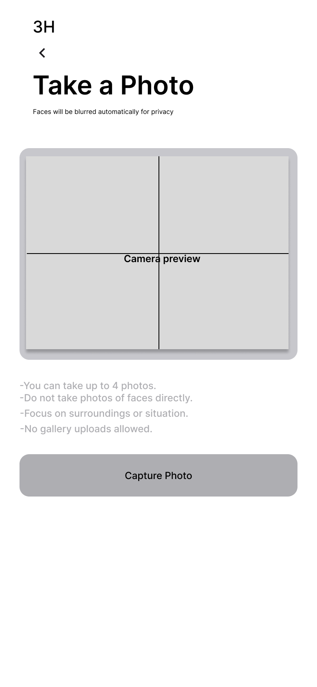
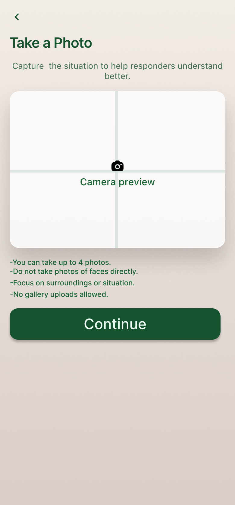
The complete
UI
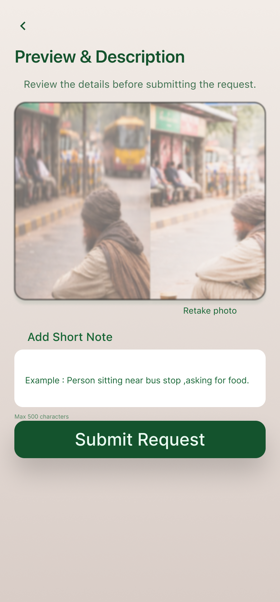
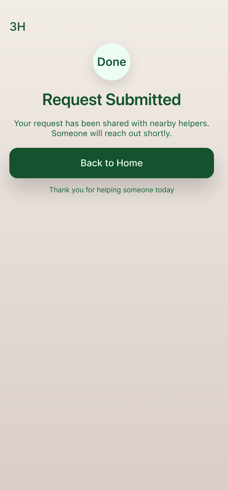
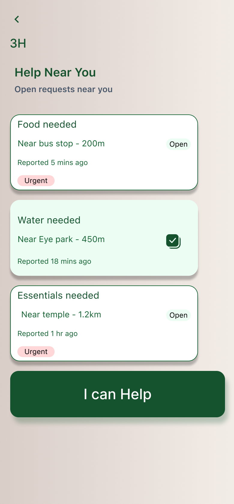
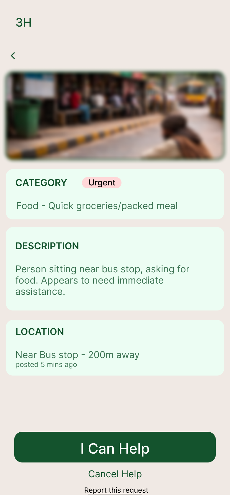
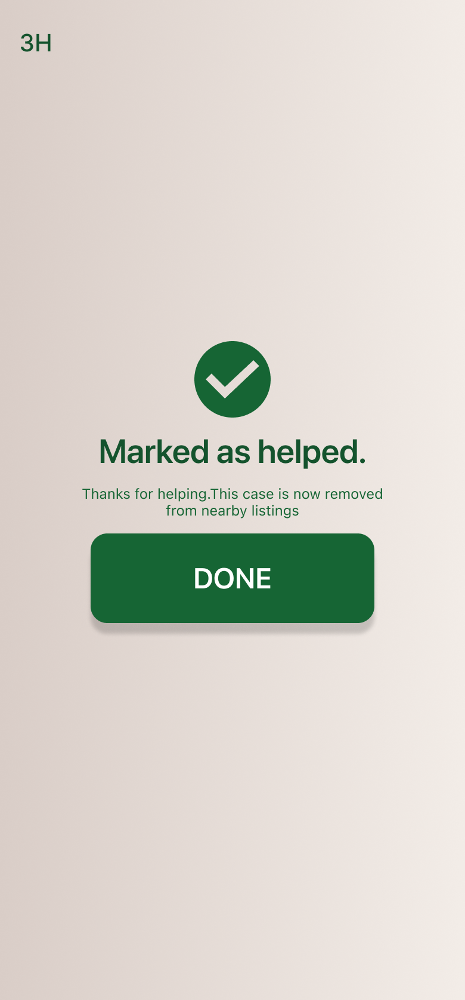
Why these
choices were made
What I learned
This project taught me that designing for sensitive situations requires restraint. Every feature request has a cost — adding a public feed would increase visibility but destroy the psychological safety the app depends on.
The most important design skill here was knowing what to remove, not what to add.
- Volunteer verification and trust scoring system
- SMS fallback for areas with no data connectivity
- Admin dashboard for community coordinators
- Multi-language support for diverse communities
- Integration with local emergency services